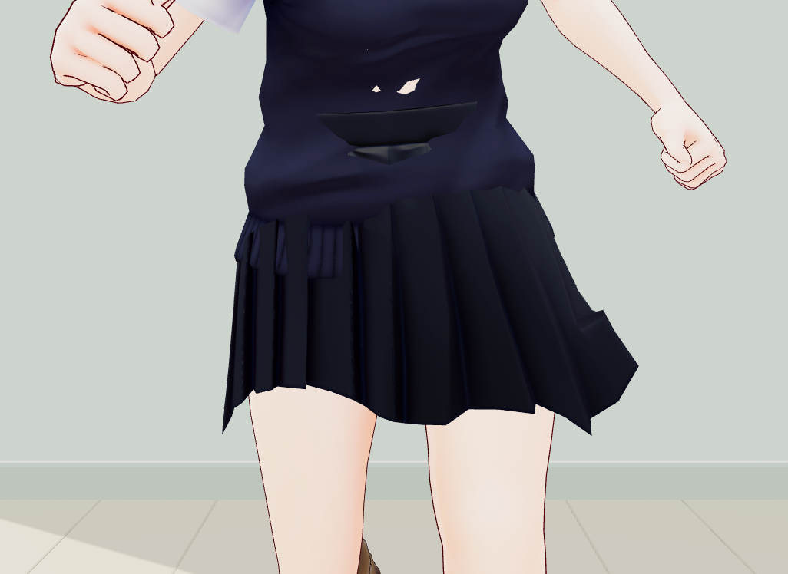

1.80 m/s：起步、直行、停止
修改前
修改后
左：83a7372f41b4；右：7e24e01556ad。相同原女角色、裙装、房间镜头和路径。右侧尚未替换 4194；整裙未通过。
本次修复裙腰丢失脊柱／胸部权重的问题。上衣露肤、自由裙摆硬折及坐姿仍有缺陷。绑定检查通过不等于衣物合身。影片按各自命令时间对齐，真实帧时间有差异，并非逐姿态锁定。


已检查完整时长抽帧与数值；抽帧不代表连续自然度验收。影片、报告和源码快照哈希见 manifest.json。程序结果见 report.json 和 contact/，仍未完成目标普通电脑实测。